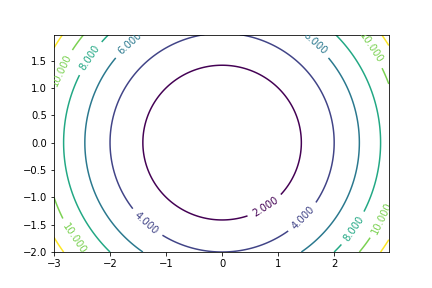
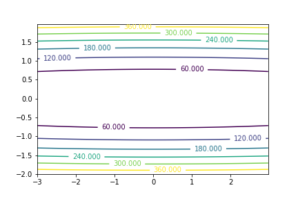

Introduction to optimization algorithms
Mathematical Optimization
Mathematical Optimization is the branch of mathematics that aims to solve the problem of finding the elements that maximize or minimize a given function. Its importance stems from the fact that many problems in engineering and machine learning can be cast as mathematical optimization problems. For example, in a spam detection filter we might aim to find the system that minimizes the number of misclassified emails. Similarly, when an engineer designs a pipe, we will seek for the design that minimizes cost while respecting some safety constraints. Both are examples that can be modeled as optimization problems.
Note: Optimization is a broad field. This lecture will be exclusively about gradient-based optimization methods.
Notation
Given an extended real-valued function $f: \RR^p \to \RR$, the general problem of finding the value that minimizes this function is written as follows
\begin{equation}\label{eq:fw_objective} \minimize_{\boldsymbol{x} \in \RR^p} f(\boldsymbol{x}) ~, \end{equation}
In this context, $f$ is the objective function (sometimes referred to as loss function, cost function or energy).
The rules of the game
Consider the following 2-dimensional optimization problem, with $$ \minimize_{x \in \RR^2}\, \underbrace{(1 - x_1)^2 + 100(x_2 - x_1^2)^2}_{= f(x)}~. $$ Since the domain of the objective function is a 2-dimensional space, we can visualize this objective function as an image in 2-D, where the color (darker=lower value) encodes the value of the objective function.
A naive approach is to evaluate the function at a discrete grid and then just select the value that minimize the cost function. However, this approach is very inefficient: the number of function evaluation it requires is exponential in the number of dimensions.
Let $n$ be the grid size in each dimension. Then this approach requires $ n^d $ function evaluations. Since we aim to solve problems with large $d$ (in the thousands if not millions), we need more efficient methods.
A more efficient approach instead is to start from an initial guess and iteratively refine the initial guess. The information that to which we have access is the objective function value and its gradient
Knowing your problem
Not all optimization problems are equal. Knowing your problem enables you to choose the right tool.
Dimensionality of the problem
The scale of an optimization problem is pretty much set by the dimensionality of the problem, i.e. the number of scalar variables on which the search is performed.
Convex versus non-convex optimization
 |
 |
A convex function:
|
A non-convex function |
Optimizing convex functions is typically easier than optimizing non-convex functions. Convex functions have the nice property that the gradient vanishes only at a global optimum
Smooth and non-smooth problems
 |
 |
A smooth function: The gradient is defined everywhere, and is a continuous function |
A non-smooth function |
Optimizing smooth functions is easier (true in the context of general function, otherwise Linear Programming is an example of methods which deal very efficiently with piece-wise linear functions).
Smooth functions have the crucial property that at each point admit a quadratic upper bound. I.e., there exists $0 \leq L < \infty$ such that the following inequality is verified for all $\xx, \yy$ in the domain: \begin{equation} f(\yy) \leq f(\xx) + \langle \nabla f(\xx), \yy - \xx\rangle + \frac{L}{2}\|\xx - \yy\|^2 \end{equation}
Noisy versus exact cost functions
| Noisy (blue) and non-noisy (green) functions |  |
Many optimization methods rely on gradients of the objective function. If the gradient function is not given, they are computed numerically, which induces errors. In such situation, even if the objective function is not noisy, a gradient-based optimization may be a noisy optimization.
Constraints
Optimizations under constraints Here:
|
 |


Conditioning
The speed of convergence of most optimization depend on the conditioning of our problem. A well conditioned problem is one in which the curvature is similar among any direction. A badly conditioned problem is one in which the level curves
| Well conditioned problem  | Badly conditioned problem  |
Recommended Readings
At the undergrade level I recommend the book Convex Optimization Algorithms by Dimitry Bertsekas
At a more advanced level, the book by Nesterov